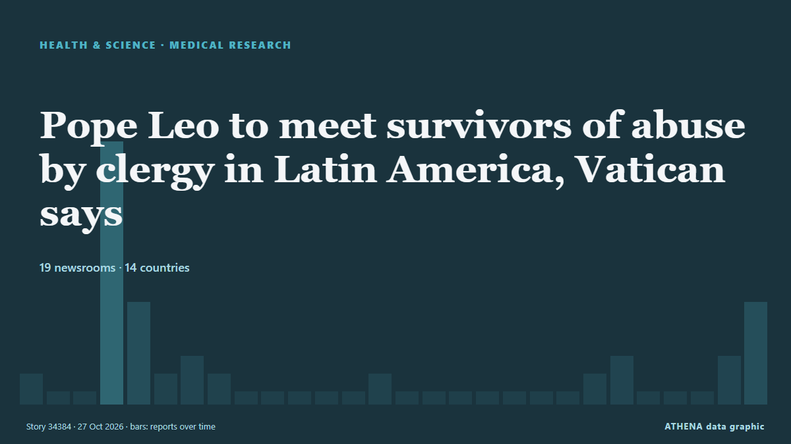

Pope Leo to meet survivors of abuse by clergy in Latin America, Vatican says

VATICAN CITY, Oct 27 - Pope Leo will meet with survivors of sexual abuse by Catholic clergy during his November 6 to 17 three-country tour of South America, the Vatican said on Tuesday. από The Straits Times
Αναφέρθηκε ανεξάρτητα από 19 μέσα σε 14 χώρες από τις 26 Οκτ, πρώτο από το Express Tribune· η κάλυψη έχει πλέον ηρεμήσει. Το ATHENA δεν βρίσκει ενδείξεις κινδύνου στην κάλυψη. Η βεβαιότητα είναι 89% (υψηλή), καθώς το επιβεβαιώνουν 19 ανεξάρτητα μέσα με μέση αξιοπιστία πηγών 79%.
Γιατί έχει σημασία: Οι εξελίξεις στην υγεία και την επιστήμη μπορούν να αλλάξουν τους κινδύνους δημόσιας υγείας, τις ερευνητικές προτεραιότητες και τη ρύθμιση.
Τι άλλαξε: 26 νέες αναφορές από 17 μέσα στο 24ωρο έως 27 Οκτ.
Πρώτη διατύπωση: Vatican confirms Pope Leo's Latin America trip after post-surgery checkup
Οι τίτλοι των ειδήσεων παρουσιάζονται στα αγγλικά, όπως δημοσιεύτηκαν.
Με μια ματιά
Επιλέγεται, βαθμολογείται και γράφεται από τη δημοσιευμένη μεθοδολογία του ATHENA. Κανένας συντάκτης δεν παρεμβαίνει σε μεμονωμένα γεγονότα. Πώς παράγεται ›
| 26 Oct 12:54 UTC | 1 |
|---|---|
| 26 Oct 13:54 UTC | 0 |
| 26 Oct 14:54 UTC | 0 |
| 26 Oct 15:54 UTC | 14 |
| 26 Oct 16:54 UTC | 5 |
| 26 Oct 17:54 UTC | 1 |
| 26 Oct 18:54 UTC | 2 |
| 26 Oct 19:54 UTC | 1 |
| 26 Oct 20:54 UTC | 0 |
| 26 Oct 21:54 UTC | 0 |
| 26 Oct 22:54 UTC | 0 |
| 26 Oct 23:54 UTC | 0 |
| 27 Oct 00:54 UTC | 0 |
| 27 Oct 01:54 UTC | 1 |
| 27 Oct 02:54 UTC | 0 |
| 27 Oct 03:54 UTC | 0 |
| 27 Oct 04:54 UTC | 0 |
| 27 Oct 05:54 UTC | 0 |
| 27 Oct 06:54 UTC | 0 |
| 27 Oct 07:54 UTC | 0 |
| 27 Oct 08:54 UTC | 0 |
| 27 Oct 09:54 UTC | 1 |
| 27 Oct 10:54 UTC | 2 |
| 27 Oct 11:54 UTC | 0 |
| 27 Oct 12:54 UTC | 0 |
| 27 Oct 13:54 UTC | 0 |
| 27 Oct 14:54 UTC | 2 |
| 27 Oct 15:54 UTC | 5 |
Γιατί αυτοί οι αριθμοί
Σημασία
Κίνδυνος
Βεβαιότητα
Η κάλυψη — ποιος το ανέφερε και πότε
ο τίτλος όπως δημοσιεύτηκε · ανοίγει το πρωτότυπο- Express Tribune · Πακιστάν · PakistanPope fit enough to make Latin America trip next month, Vatican says
- ANSA English · Ιταλία · ItalyHoly See Press Office confirms Pope's trip to South America
- ANSA English · Ιταλία · ItalyHoly See Press Office confirms Pope's trip to South America
- ANSA English · Ιταλία · ItalyPope says happy to be able to return to continent where I lived
- ANSA English · Ιταλία · ItalyPope says happy to be able to return to continent where I lived
- The Straits Times · Σιγκαπούρη · SingaporePope fit enough to make Latin America trip next month, Vatican says
- Breaking Belize News · Μπελίζ · BelizeInternational News: Pope Leo confirms upcoming visit to Uruguay, Argentina and Peru
- ANSA English · Ιταλία · ItalyPope says happy to be able to return to continent where he lived
- ANSA English · Ιταλία · ItalyPope says happy to be able to return to continent where he lived
- ANSA English · Ιταλία · ItalyPope says happy to return to South America as trip confirmed
- ANSA English · Ιταλία · ItalyPope says happy to return to South America as trip confirmed
- Buenos Aires Times · Αργεντινή · ArgentinaVatican confirms Pope Leo's November trip to South America
- ANSA English · Ιταλία · ItalyPope says happy to return to South America after trip confirmed
- ANSA English · Ιταλία · ItalyPope says happy to return to South America after trip confirmed
- Buenos Aires Herald · Αργεντινή · ArgentinaPope Leo XIV confirms trip to Argentina following lung surgery
- Sky News (World) · Ηνωμένο Βασίλειο · United KingdomVatican issues Pope health update ahead of South America trip
- The Rio Times · Βραζιλία · BrazilPope Leo Confirms Latin America Trip
- CBS News (World) · Ηνωμένες Πολιτείες · United StatesPope cleared for South America trip after lung cancer surgery
- Andina (English) · Περού · PeruPope Leo XIV confirms that his visit to Peru will proceed according to planned schedule
- ABC News (International) · Ηνωμένες Πολιτείες · United StatesVatican confirms Pope Leo's Latin America trip after post-surgery checkup
- Euronews English · Γαλλία · FrancePope Leo XIV confirms Latin America trip after recovering from surgery
- Anadolu Agency (English) · Τουρκία · TurkeyVatican confirms pope’s November South America visit following lung surgery
- Nile Post · Ουγκάντα · UgandaPope's South American trip to go ahead as planned after lung cancer surgery
- PBS NewsHour · Ηνωμένες Πολιτείες · United StatesFollowing post-surgery checkup, Pope Leo will proceed with Latin America trip, Vatican confirms
- Club of Mozambique · Μοζαμβίκη · MozambiquePope Leo’s trip to Uruguay, Argentina and Peru to go ahead, Vatican says
- The Straits Times · Σιγκαπούρη · SingaporePope Leo to return to his adopted home on South America tour
- Foreign Policy · Ηνωμένες Πολιτείες · United StatesA Papal ‘Homecoming’
- The Straits Times · Σιγκαπούρη · SingaporeFor Pope Leo, there was little choice but to go to Latin America
- ANSA English · Ιταλία · ItalyPope to meet some victims of abuse on South America trip
- ANSA English · Ιταλία · ItalyPope to meet some victims of abuse on South America trip
- The Straits Times · Σιγκαπούρη · SingaporePope Leo to meet survivors of abuse by clergy in Latin America, Vatican says
- ABC News (International) · Ηνωμένες Πολιτείες · United StatesPope will meet with survivors of clergy abuse during upcoming trip to Latin America, Vatican says
- Global News (World) · Καναδάς · CanadaPope to meet with clergy abuse survivors during Latin America visit: Vatican
- CNA (Channel NewsAsia) · Σιγκαπούρη · SingaporePope Leo to meet survivors of abuse by clergy in Latin America, Vatican says
- Buenos Aires Times · Αργεντινή · ArgentinaPope Leo XIV to meet Church abuse victims during South America trip